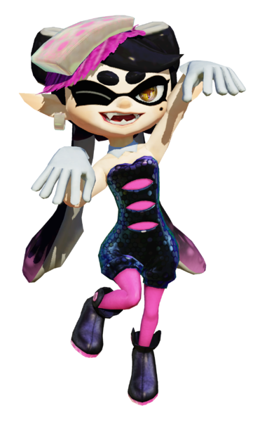

Callie

Callie is a part of the Squid Sisters pop idol duo and a former host of Inkopolis News, along with her cousin Marie. Her signature color is magenta.Callie is a very fashionable Inkling and has a more 'outgoing' design in comparison to her cousin. She sports a classic twin-tail hairstyle,
with calf-length black tentacles and a large bow on the back of her head. The ends of her tentacles have a pink gradient and are decorated with spots.
She parts her bangs to the left. Unlike of the usual Inkling eye mask, Callie's eye markings are more angular, with small eyelash-like points, and include a beauty mark under her left eye.
She has large golden irises and plus-shaped brown pupils underneath large oval eyebrows. Her ears are slightly narrower, longer, and more upturned than those of the average Inkling.
Marie
Marie is a part of the Squid Sisters pop idol duo and a former host of Inkopolis News, alongside her cousin Callie. Her signature color is lime green.
Marie is a very fashionable Inkling and has a more 'laid-back' design in comparison to her cousin. Her tentacles, which are light gray, are tied in a large bow on the right side of her head,
with the ends wrapped around to the other side and curling up slightly at the ends. The ends of her tentacles have a green gradient and are decorated with spots. She parts her bangs to the right.
Unlike of the usual Inkling eye mask, Marie's eye markings are more droopy, with small eyelash-like points, and include a beauty mark under her right eye. She has large golden irises and plus-shaped brown pupils underneath large oval eyebrows.